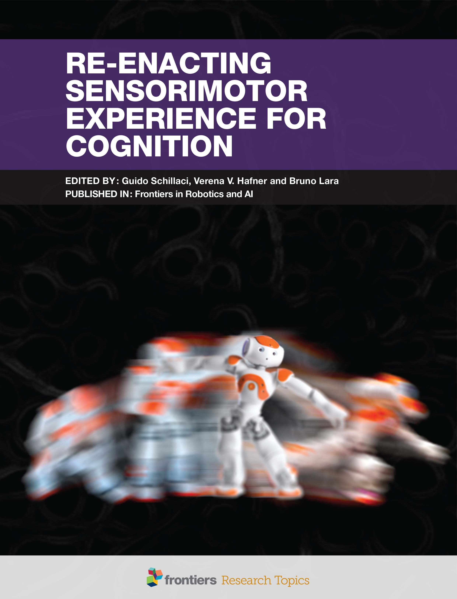

Frontiers eBooks published in March
aperture':'0','credit':'Guido Schillaci','camera':'','caption':'Mastering the sensorimotor capabilities of our body is a skill that we acquire and refine over time, starting at the prenatal stages of development.','created_timestamp':'0','copyright':'','focal_length':'0','iso':'0','shutter_speed':'0','title':'Re-Enacting Sensorimotor Experience for Cognition','orientation':'1'}' data-image-title='Re-Enacting Sensorimotor Experience for Cognition' data-large-file='https://frontiersinblog.files.wordpress.com/2017/04/cover3.jpg?w=782' data-medium-file='https://frontiersinblog.files.wordpress.com/2017/04/cover3.jpg?w=229' data-orig-file='https://frontiersinblog.files.wordpress.com/2017/04/cover3.jpg' data-orig-size='2480,3248' data-original-height='405' data-original-width='310' src='https://frontiersinblog.files.wordpress.com/2017/04/cover3.jpg?w=310=405'>
Posted On: 2017-04-07T00:00:00

Content Date: 2017-04-07
Download Date: 2021-07-10
Document ID: L0C04F6SN